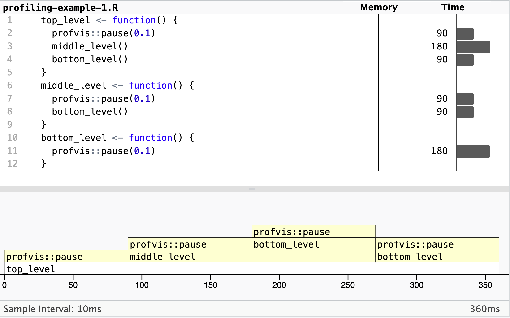
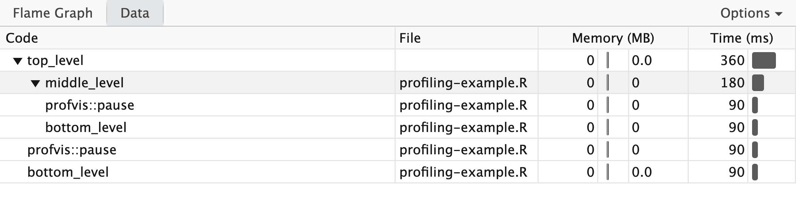
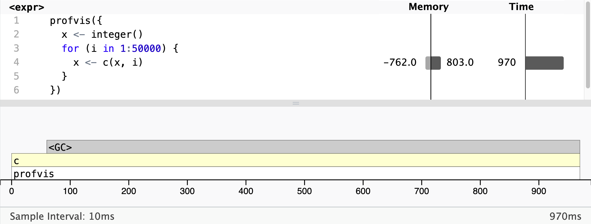

Find slow code. Make it faster. Check you didn’t break anything.
bham-carpentries.github.io/pando-r
But first: find out where the time goes
Full instructions: Setup
Measuring how your code uses resources as it runs:
Aim for fast enough,
not as fast as possible
GTA Online: slow loading screens for 8 years
An outsider profiled it → 70% faster loading
In R, profvis does function- and line-level profiling, and visualises it
Profiling slows your code down and generates lots of data
A good test case is:
e.g. a year-long hourly model → profile one day
Think of an R project you’ve worked on.
A sampling profiler: every few milliseconds it pauses and records
Results vary a little each run
After 0.1s:pause, top_level
After 0.2s:pause, middle_level, top_level
What is the call stack after 0.3s? After 0.4s?
profiling.R:Use RStudio, not Positron, for profiling



." class="r-stretch"><GC> = garbage collector
Which parts of the code are slow?
Download travelling-salesperson.R
n_cities makes a good test case?Too slow? Press Esc or the red stop button
| If one call takes | then in one second you can make |
|---|---|
| 1 millisecond (ms) | 1 thousand calls |
| 1 microsecond (µs) | 1 million calls |
| 1 nanosecond (ns) | 1 billion calls |
bench::mark()min · median · itr/sec · mem_alloc · n_gc · gc/sec · n_itr · total_time
Which are most useful for picking the best expression? Why?
How will these rank on speed? Check with bench::mark().
Wrap each version in a function:
bench::press()What does “big” mean for your data?
bench::press() benchmarks over a grid of parameters
gl()gl(n, k): a factor with n levels, each repeated k times
Looking at bp, does increasing n or k have the bigger impact on speed?
We should forget about small efficiencies, say about 97% of the time: premature optimization is the root of all evil. Yet we should not pass up our opportunities in that critical 3%.
— Donald Knuth
Much of R (and packages like dplyr and data.table) is written in C, C++ or Fortran
Tell R what you want,
let it work out how
expect_*()Which expect_*() functions make these tests pass?
Get to the underlying C code
as quickly as possible
Fewer R function calls → less overhead
vs
How many function calls does the loop make?
Use bench::mark() to compare x <- x + 1 with the for loop.
Try different lengths of x.
Tip: wrap each version in a function
Work on whole vectors, not individual elements
Write a vectorised variance() function:
\[ \mathrm{Var}(x) = \frac{1}{n-1}\sum_{i=1}^n(x_i - \bar{x})^2 \]
Benchmark it against var() with x <- runif(10000).
Why is var() faster?
& and |: vectorised, element by element&& and ||: length-1 only, skip the right-hand side if not needed
&& / || on longer vectors is an error in R ≥ 4.3
apply() family| Function | Applies over | Returns |
|---|---|---|
apply() |
rows/columns of a matrix | vector, matrix or list |
lapply() |
elements of a list/vector | list |
sapply() |
elements of a list/vector | simplified (if possible) |
vapply() |
elements of a list/vector | type you specify: safer, faster |
For numeric matrices and data frames, specialised functions are faster than apply()
rowSums(mat) (instead of apply(mat, 1, sum))colSums()rowMeans()colMeans()| Instead of | Use |
|---|---|
sort(x)[1:10] |
sort(x, partial = 1:10)[1:10] |
rev(sort(x)) |
sort(x, decreasing = TRUE) |
seq() |
seq_len(), seq_along(), seq.int() |
rep() |
rep.int(), rep_len() |
which(x == min(x)) |
which.min(x) |
any(is.na(x)) |
anyNA(x) |
Check the help pages!
One object, two names: no copy
R copies an object only when you modify one that has more than one name
tracemem() shows you when copies happenRStudio’s Environment pane can cause extra copies
x <- x + 1rm() large objects you’re finished withc(), append(), rbind(), cbind(), paste() in a loop:
grow(n) · pre_allocate(n) · direct(n)
n increases? Worst?bench::mark(). At what n do differences appear?View(move_square) into move_square2(), speed it upprofvis() for both:data.frame: base Rtbl_df (tibble): tidyversedata.table: built for speed on large dataAll three are lists of columns
| Copies data? | |
|---|---|
as_tibble(df) |
No |
as.data.table(df) |
Yes |
setDT(df) |
No: converts in place |
data.frame, tibble: copy-on-modifydata.table: modify-by-reference with := and set()Use copy() if you need an independent table
Slow for every table type
Write a version with no loop. How much faster is it? How much less memory?
read.csv() → readr::read_csv() → data.table::fread()
slow → fast → fastest
data.table is multithreaded: getDTthreads()
mem_alloc misses memory allocated in Cdata.table for grouping, joins, sorting, readingdata.table or avoid copying large columnsdtplyr
Write dplyr, run data.table
Embarrassingly parallel: independent pieces, combined at the end
But parallelism has overheads
Works with the apply() family, purrr, foreach, … and on HPC
Parallelise this, and compare run times with tictoc:
How large does N need to be for parallel to be worth it?
1:1e9 uses almost no memoryif_else(), case_when() up to 30x fasterarrange() up to 100x fasterCheck the release notes: behaviour can change too
%*%, solve(), lm() and more use BLAS
1.82s → 0.038s
2000 × 2000 matrix multiplication, reference BLAS vs Apple Accelerate
Only helps linear algebra · may clash with parallel code
Rewrite the bottleneck in a compiled language, call it from R